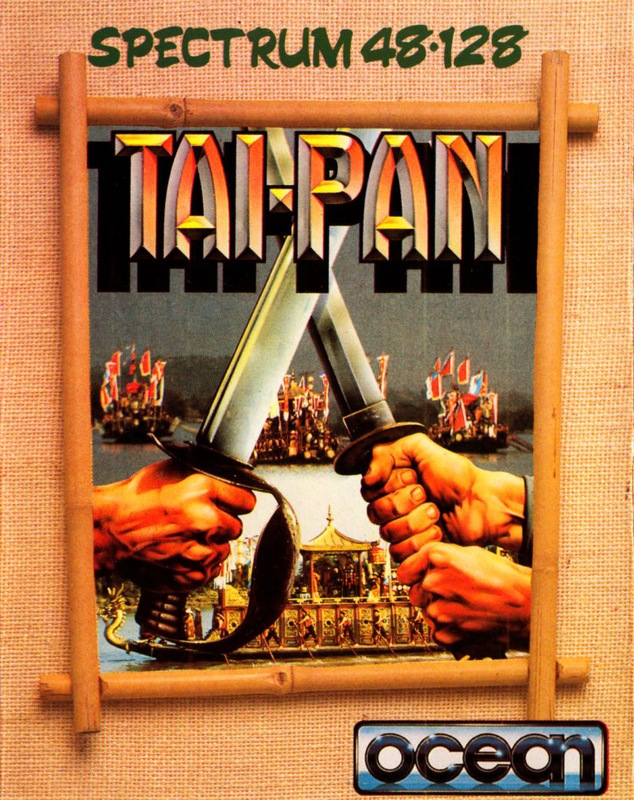
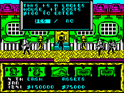
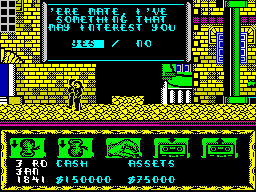
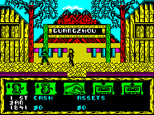

Tai-Pan


{kind=link}

| Publisher: | Ocean |
| Price: | £7.95 |
| Year: | 1987 |
| Source: | CRASH, Issue 43 |

In the Year Of Our Lord 1841, the eastern seaways are teeming with traders. And in this game based on James Clavell’s best-selling novel you are Dirk Struan, a merchant intent upon amassing a fortune as quickly as possible in the streets and seas of the Orient.
As in any trading game, a financial stake is required; in Tai-Pan it’s to be found in the local town of Canton — a loan of $300,000, repayable in six months on pain of death. The sum is sufficient for some of your needs, but not all. For instance, you need a ship, and the three up for sale are a lorcha (a lightly armed, fast smuggling ship) at $150,000, a standard trading clipper with more cannon and crew for $250,000, and a heavily armed frigate which at $400,000 is out of your range — at first.

ill-repute — for the same price as a
crew member it’d better be worth the
cash
The stews of the Far East offer delights, dangers, deals and man-power. Once purchased a vessel must be crewed, either with mercenary sea-dogs or with infinitely cheaper press-ganged labour. The jobcentres for the latter are inns, where only the most exhausted and drunked seafromnt dregs are incapable of resisting their unceremonious enlistment.
With a full complement of crew (some ships need more sailors than others), the vessel can be loaded with such valuable objects as maps, compass, telescope and sextant, foodstuffs and trading goods bought from warehouses and suppliers.
During these consumer expeditions, you may find gambling dens where you can bet on a race between mythical beasts, substantially plumping your wallet or giving it anorexia. Other urban delights include a brothel and inn that can delight — and leave you tired, drunk, and susceptible to press-ganging.

begins; shopping list at the ready, a
boat, six crew, food, wine, women and
song. Who said this was a bad life?
In town, smugglers may accost you and try to sell you highly dangerous contraband, which is very profitable when traded between ports — but carries the risk of gaol.
With purchased items stored in your ship’s limited cargo space, you choose a shipping route and set sail for distant ports. Weather conditions, wind direction and pirate ships can jeopardise any voyage, but a careful choice of route can diminish such problems.
As you put to sea, the street scenes are replaced by a bird’s-eye view of ocean and land. Beneath this geographic scene are seven icons which raise and lower the ship’s sails, assess the wind direction, provide a telescope, offer a combat mode, unfurl a map of the China Seas and feed the crew — important, because otherwise they might mutiny from hunger or succumb to scurvy, the sailor’s disease caused by lack of vitamin C.
With a powerful frigate, you can turn privateer and plunder other craft. If hit by cannonballs a ship is disabled and can be boarded by sailing alongside and killing its Captain.

the streets of Guangzou in Ocean’s adaptation
of James Clavell’s Tai-Pan
But fierce resistance can be expected, and you might have to retreat to your vessel. If too many of your crew are killed in battle, your own ship becomes unsailable. (Likewise, don’t kill too many enemy sailors — you’ll need them to sail the captured ship.) And fighting reduces your men’s stamina, already eaten away by hunger.
Careful cannon fire ensures that the captured vessel and its cargo remain intact and seaworthy and will fetch a high price in port. But other privateers my attempt to take your captured ships and end your quest for fortune.
As you build up your fleet, a great trading empire can be founded, generating enough wealth to repay your debt and leave you a colonial master of the Orient.
CRITICISM
“This is one of the best trader games around, and very good by any standards. The graphics are colourful, and the sound on the 128 version is very impressive. With such a variety of things to do (trading, killing pirates etc) and a huge playing area it can keep the player enthralled for hours. Tai-Pan is one of the most enjoyable games to come out this year — buy it and you won’t regret it!”
ROBIN
“The long wait has been worth it. It’s obvious from the first game of Tai-Pan that months of work have gone into making this one of the best trading games around. It’s not just because of the attractive and cleverly-designed graphics, but also because it’s so tremendously addictive and playable. The only bad point is the complexity of this Oriental wonder! The screens at all the ports are exactly the same, though laid out differently — even so it taks ages for boredom to set in. It’s all highly original and the realism is unbelievable; you’ll have to play it to find out.”
PAUL
“Whereas most licensed novels require some knowledge of the story line, Tai-Pan is an excellent game in itself — and the Oriental scene adds dramatically to the atmosphere. The objective may seem difficult, but the icons and simple question/answer options are a great help and I was soon engrossed. Tai-Pan isn’t easy — it requires dedicated mapping and note-keeping. But there’s a lot to keep the player occupied: a gambling game, a fast-reaction shoot-’em-up (boarding) and a pseudo Gauntlet game. Add to those the astounding street-scene graphics and Oriental electro-bop tune, and you’ve got one of the most enthralling arcade adventures of the year.”
RICKY
COMMENTS
| Control keys: | Q up, Z down, I left, P right, N fire, SPACE toggle icon |
| Joystick: | Cursor, Kempston, Sinclair |
| Use of colour: | Very good |
| Graphics: | Range from simple to detailed and decorative |
| Sound: | A good tune but potentially annoying |
| Skill levels: | One |
| General rating: | An enthralling trade-’em-up adventure with depth and atmosphere |
| Presentation: | 89% |
| Graphics: | 93% |
| Playability: | 90% |
| Addictive qualities: | 94% |
| Overall: | 93% |